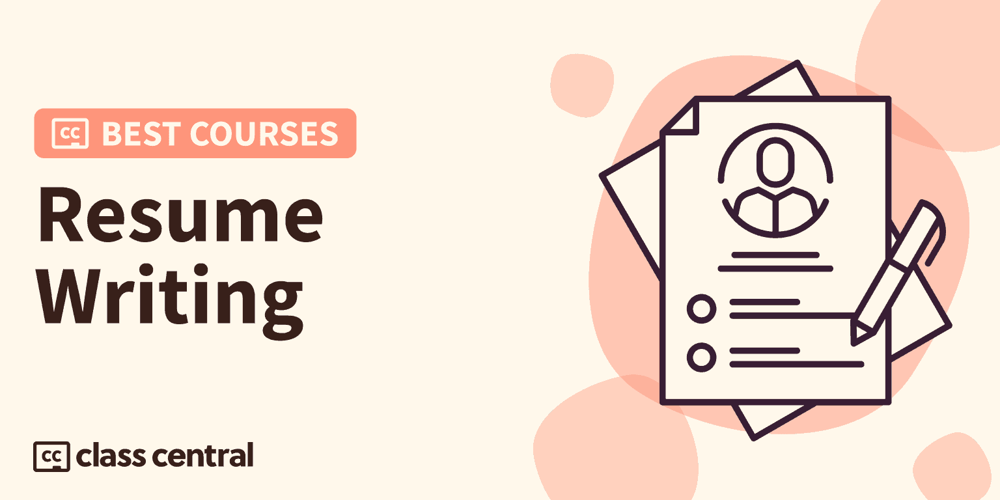

2023 में लेने के लिए 10 सर्वश्रेष्ठ रिज्यूमे राइटिंग कोर्स
अपना पहला इंप्रेशन गिनें और उस नौकरी को ऑनलाइन पाठ्यक्रम लिखने वाले सर्वश्रेष्ठ रिज्यूमे के साथ हासिल करें।

लगभग किसी भी नौकरी के लिए आवेदन करते समय रिज्यूमे काफी पहला कदम होता है। इससे पहले कि वे आपसे मिलें, वे संभावित नियोक्ताओं को इस बात का पहला विचार देते हैं कि आप कौन हैं और आप उस नौकरी के लिए उपयुक्त क्यों हो सकते हैं। इसलिए आपका रिज्यूमे जितना हो सके उतना परफेक्ट होना चाहिए।
इस गाइड में, मैंने आपके लिए 10 सर्वश्रेष्ठ मुफ्त और सशुल्क रिज्यूम राइटिंग ऑनलाइन पाठ्यक्रम चुने हैं50+ फिर से शुरू लेखन पाठ्यक्रमहमारे कैटलॉग पर एक अच्छी तरह से परिभाषित कार्यप्रणाली का पालन करके जिसे आप नीचे पा सकते हैं।
लेकिन अगर आप सीधे नतीजों पर जाना चाहते हैं, तो यहां मेरी शीर्ष 10 पसंद हैं। संबंधित खंड पर जाने के लिए आप पाठ्यक्रम पर क्लिक कर सकते हैं:
| अवधि | कार्यभार | संक्षिप्त |
| 1.रिज्यूमे लिखना (लिंक्डइन लर्निंग) | 2-3 घंटे | श्रेष्ठमुक्तरिज्यूम राइटिंग और जॉब सर्च बेसिक्स की मूल बातें सीखने के लिए शुरुआती-अनुकूल पाठ्यक्रम |
| 2.विजेता रिज्यूमे और कवर लेटर लिखना (मैरीलैंड विश्वविद्यालय) | 13 घंटे | कंपनियों द्वारा बोली जाने वाली भाषा में रिज्यूमे लिखना सीखने के लिए इंटरमीडिएट सीखने वालों के लिए सबसे अच्छा कोर्स |
| 3.रिज्यूमे कैसे लिखें (प्रोजेक्ट-सेंटर्ड कोर्स) (न्यूयॉर्क स्टेट यूनिवर्सिटी) | 20-24 घंटे | हाल ही के स्नातकों के लिए सर्वोत्तम अभ्यासों और वर्तमान रुझानों को फिर से शुरू करने के लिए परियोजना-आधारित पाठ्यक्रम |
| 4.टेक रिज्यूमे लिखना (लिंक्डइन लर्निंग) | <1 घंटा | तकनीकी पृष्ठभूमि के शिक्षार्थियों के लिए तकनीकी रिज्यूमे लिखना सीखने के लिए लघु पाठ्यक्रम |
| 5.बदलाव फिर से शुरू करें (लिंक्डइन लर्निंग) | 2 घंटे | किसी भी व्यक्ति के लिए बढ़िया कोर्स जो अपने रिज्यूमे में सुधार करना चाहता है और भर्ती प्रक्रिया के बारे में जानना चाहता है |
| 6.एक विजयी रिज्यूमे कैसे लिखें - टॉप रिज्यूमे राइटिंग टिप्स (प्रोफेसर हीदर ऑस्टिन) | 1-2 घंटे | छोटा,मुक्तशुरुआती लोगों के लिए रिज्यूमे लिखना सीखने के लिए पाठ्यक्रम में उपयोगी टिप्स और ट्रिक्स शामिल हैं |
| 7.संपूर्ण बायोडाटा, लिंक्डइन और अपने सपनों का जॉब कोर्स प्राप्त करें! (उदमी) | 12 घंटे | नौसिखियों के लिए 3-भाग का कोर्स साक्षात्कार कौशल, फिर से शुरू करने/लिंक्डइन कौशल और नेटवर्किंग कौशल सीखने के लिए |
| 8.अपने रेज़्यूमे को नया स्वरूप दें: व्यावसायिक दस्तावेज़ डिज़ाइन करना (स्किलशेयर) | 2-3 घंटे | शुरुआती लोगों के लिए पेशेवर दस्तावेज़ों को डिज़ाइन करना और इनडिज़ीन कौशल विकसित करना सीखने के लिए उपयोगी पाठ्यक्रम |
| 9.क्रिएटिव के लिए रिज्यूमे डिजाइन करना (लिंक्डइन लर्निंग) | 1-2 घंटे | एक आकर्षक रिज्यूमे बनाने के लिए रचनात्मक पृष्ठभूमि के शिक्षार्थियों के लिए शुरुआती-अनुकूल पाठ्यक्रम |
| 10.[2021] करियर हैकिंग™: रिज्यूमे, लिंक्डइन, साक्षात्कार + और अधिक (उदमी) | 6 घंटे | रिज्यूमे राइटिंग, कवर लेटर, इंटरव्यू और नेटवर्किंग कौशल सीखने के लिए नौसिखियों के लिए अच्छा कोर्स |
रिज्यूमे राइटिंग क्या है?
एक फिर से शुरू एक औपचारिक दस्तावेज है, जो आम तौर पर एक से दो पृष्ठों का होता है, जो उम्मीदवार की शिक्षा, अनुभव और कौशल पर प्रकाश डालता है। नौकरी चाहने वाले नौकरी के लिए आवेदन करते समय रिज्यूमे लिखते हैं ताकि संबंधित नौकरी के लिए उनकी योग्यता और मूल्य का मूल्यांकन किया जा सके। नियोक्ता कंपनी की करियर वेबसाइट, जॉब सर्च इंजन या पेशेवर सोशल मीडिया पेज के माध्यम से व्यक्तिगत रूप से रिज्यूमे एकत्र कर सकते हैं।
शब्द "रिज्यूमे" मूल रूप से फ्रेंच शब्द 'से आया है।फिर शुरू करना', रिज्यूमर का पिछला कृदंत जिसका अर्थ है "संक्षिप्त करना"। हालांकि, यह शब्द मुख्य रूप से अमेरिका और कनाडा में एक दस्तावेज़ का प्रतिनिधित्व करने के लिए उपयोग किया जाता है जो आपके कौशल और कार्य अनुभव को प्रदर्शित करता है, न कि फ़्रांस और यूरोप के अन्य हिस्सों में जहां पाठ्यक्रम वीटा (या सीवी) का उपयोग किया जाता है। भारत, पाकिस्तान और बांग्लादेश में बायोडाटा का उपयोग अक्सर बायोडाटा के स्थान पर किया जाता है।
मजेदार तथ्य: क्या आप जानते हैं कि लियोनार्डो दा विंची 15वीं शताब्दी में रिज्यूमे लिखने वाले पहले रिकॉर्डेड व्यक्ति थे (भले ही यह एक अक्षर से अधिक था)?
रिज्यूमे लेखन कौशल क्यों महत्वपूर्ण हैं?
रिज्यूमे संभावित नियोक्ताओं पर आपका पहला प्रभाव डालता है। इसीलिए रिज्यूमे राइटिंग एक महत्वपूर्ण स्किल है।वास्तव मेंरिज्यूमे महत्वपूर्ण क्यों हैं, इसके कुछ और कारण नीचे दिए गए हैं:
- नियोक्ताओं को खुद को बाजार में लाने का अवसर प्रदान करता है
- आपके कौशल, पृष्ठभूमि और शिक्षा को रेखांकित करता है ताकि नियोक्ता आसानी से देख सकें कि आपका अनुभव किसी कंपनी की सफलता में कैसे योगदान देता है
- नियोक्ताओं को अयोग्य उम्मीदवारों को खत्म करने में मदद करता है
- आपको अपने लिखित संचार कौशल का प्रदर्शन करने की अनुमति देता है
रिज्यूमे राइटिंग के साथ मेरा अनुभव क्या है?
पूरे स्कूल और कॉलेज में, मुझे अपने पाठ्यक्रम के हिस्से के रूप में अच्छा रिज्यूमे लिखना सिखाया गया और मैंने उच्च अंक भी प्राप्त किए। और मुझे एक बहुत अच्छी नौकरी मिली ठीक है!
इसके अलावा, मैं एनिर्देशित परियोजना प्रशिक्षकऔर कौरसेरा में एक बीटा टेस्टर, आधिकारिक रूप से लॉन्च होने से पहले कई पाठ्यक्रमों का परीक्षण कर चुका है। मैंनें ले लिया है50 से अधिक ऑनलाइन पाठ्यक्रमविभिन्न विषयों में।
एक ऑनलाइन शिक्षार्थी और शिक्षक के रूप में मेरे अनुभव ने मुझे एक ऑनलाइन पाठ्यक्रम में क्या देखना है, इस पर कुछ परिप्रेक्ष्य दिया है। इस सूची में प्रत्येक पाठ्यक्रम का मूल्यांकन करने के लिए मैंने अपने अनुभव का उपयोग किया।

पाठ्यक्रम रैंकिंग पद्धति
मैंने पिछली रैंकिंग में उपयोग की गई अब आजमाई हुई कार्यप्रणाली के बाद यह रैंकिंग बनाई है (आप उन सभी को यहाँ पा सकते हैं). इसमें तीन चरणों वाली प्रक्रिया शामिल है:
- शोध करना:मैंने क्लास सेंट्रल के डेटाबेस का लाभ उठाकर शुरुआत की100K ऑनलाइन पाठ्यक्रमऔर 200K+ समीक्षाएं। फिर, मैंने प्रारंभिक चयन किया50+ फिर से शुरू लेखन पाठ्यक्रमरेटिंग, समीक्षा और बुकमार्क द्वारा।
- मूल्यांकन करना:मैं क्लास सेंट्रल, रेडिट, और पाठ्यक्रम प्रदाताओं पर समीक्षाओं के माध्यम से यह समझने के लिए पढ़ता हूं कि अन्य शिक्षार्थियों ने प्रत्येक पाठ्यक्रम के बारे में क्या सोचा और इसे एक के रूप में अपने स्वयं के अनुभव के साथ जोड़ा।सिखाने वाला.
- चुनना:अच्छी तरह से बनाए गए पाठ्यक्रमों को चुना गया था यदि वे मूल्यवान और आकर्षक सामग्री प्रस्तुत करते हैं और उन्हें मानदंडों के एक सेट में फिट होना पड़ता है और तदनुसार रैंक किया जाता है: व्यापक पाठ्यक्रम, रिलीज की तारीख, सामर्थ्य, रेटिंग और नामांकन।
अंतिम परिणाम पाठ्यक्रमों का एक अनूठा चयन है जो एक दशक के क्लास सेंट्रल डेटा और एक ऑनलाइन शिक्षार्थी के रूप में मेरे अपने अनुभव को दोनों दुनिया के सर्वश्रेष्ठ प्राप्त करने का प्रयास करने के लिए जोड़ता है। अब तक, मैंने इस सूची को बनाने में 10 घंटे से अधिक का समय लगाया है, और मैं इसे अपडेट करना जारी रखूंगा।
पाठ्यक्रम रैंकिंग सांख्यिकी
इस कोर्स रैंकिंग के संबंध में कुछ आंकड़े इस प्रकार हैं:
- संयुक्त रूप से, इन पाठ्यक्रमों ने अर्जित किया है760. श्री केनामांकन।
- 3 कोर्स हैंमुक्तयाफ्री-टू-ऑडिटऔर 7 पाठ्यक्रम हैंचुकाया गया.
- रैंकिंग में सबसे अधिक प्रतिनिधित्व वाला कोर्स प्रदाता हैलिंक्डइन लर्निंग, 4 पाठ्यक्रमों के साथ।
- सभी 10 पाठ्यक्रम अंग्रेजी में हैं।
- लेखन विषय फिर से शुरू करेंउसके बाद ओवर हैz.ShKक्लास सेंट्रल पर शिक्षार्थी, और क्लास सेंट्रल कैटलॉग में 50 से अधिक पाठ्यक्रमों के लिए खाते
तो आगे की हलचल के बिना, ऑनलाइन पाठ्यक्रमों को लिखने के लिए सबसे अच्छा फिर से शुरू करने के लिए मेरी पसंद पर जाएं।
1. रिज्यूमे लिखना (लिंक्डइन लर्निंग)

ऑनलाइन पाठ्यक्रम लिखने के लिए सर्वश्रेष्ठ रिज्यूमे के लिए मेरी पहली पसंद हैनि: शुल्क पाठ्यक्रमबायोडाटा लिखनालिंक्डइन लर्निंग पर।
यहमुक्तशुरुआती-अनुकूल पाठ्यक्रम आपको फिर से शुरू लिखने की मूल बातें सिखाएगा। क्या अधिक है - एक नौकरी चाहने वाले के रूप में, आप कुछ अतिरिक्त नौकरी खोज मूल बातें भी समझेंगे जैसे कि काम करने के लिए कंपनियों की पहचान करना और फिट का निर्धारण करना। इसके अलावा, आप अपने अनुभवों पर ध्यान केंद्रित करते हुए नौकरी छूटने, अनुभव की कमी या बेरोजगारी के अंतराल से निपटने में सक्षम होंगे।
पाठ्यक्रम के अंत तक, आप सीखेंगे कि अपने रिज्यूमे में क्या शामिल करें और क्या नहीं और अपनी प्रतिभा और सर्वोत्तम गुणों का प्रदर्शन करें। आप अपने रिज्यूमे के लिए सही प्रारूप का चयन करने में सक्षम होंगे, नौकरी की आवश्यकताओं से मेल खाने के लिए दर्जी जानकारी, और वैकल्पिक रिज्यूमे लिखेंगे जिसमें उद्योग-विशिष्ट जानकारी शामिल हो।
आप क्या सीखेंगे
सबसे पहले, आप सीखेंगे कि इसके मूल घटकों जैसे कि वस्तुनिष्ठ विवरण, कौशल अनुभाग, कार्य अनुभव, शिक्षा और तकनीकी कौशल को समझकर एक प्रभावी रिज्यूमे कैसे बनाया जाता है। आप जिस नौकरी के लिए आवेदन कर रहे हैं, उससे मेल खाने के लिए आप इन घटकों को अनुकूलित करेंगे, उपलब्धियों, पुरस्कारों और प्रकाशनों का उपयोग करके अपने रिज्यूमे को अपग्रेड करेंगे और सही लेआउट और प्रारूप का चयन करेंगे।
इसके बाद, आप विभिन्न उद्योगों और क्षेत्रों के लिए रिज्यूमे सहित वैकल्पिक रिज्यूमे डिजाइन को कवर करेंगे, और करियर में बदलाव, रोजगार में अंतराल और दीर्घकालिक बेरोजगारी जैसी सामान्य चुनौतियों को कैसे संभालेंगे।
उसके बाद, आप समझ पाएंगे कि अन्य आवेदकों से अलग दिखने के लिए अपने रिज्यूमे का उपयोग कैसे करें और अपने उद्देश्य पर ध्यान केंद्रित करके, नियोक्ताओं द्वारा वांछित कौशल का प्रदर्शन करके और अपनी शिक्षा और स्वयंसेवी कार्य का प्रभावी ढंग से उपयोग करके एक सफल नौकरी की खोज कैसे करें।
अंत में, आप ऑनलाइन एप्लिकेशन, साक्षात्कार, नेटवर्किंग और सूचनात्मक साक्षात्कार जैसे विभिन्न परिदृश्यों में फिर से शुरू करने के लिए सर्वोत्तम अभ्यास भी सीखेंगे, और संभावित कंपनियों की पहचान करके, फिट का निर्धारण करने और संपर्कों को ढूंढने के लिए सक्रिय बनाम प्रतिक्रियाशील नौकरी खोज करेंगे।
आप कैसे सीखेंगे
पाठ्यक्रम 10 मॉड्यूल में बांटा गया है। प्रत्येक मॉड्यूल में लगभग 10 से 20 मिनट का कार्य शामिल है। अवधारणाओं को वीडियो, अभ्यास अभ्यास और क्विज़ के संयोजन के माध्यम से पढ़ाया जाता है।
| प्रदाता | लिंक्डइन लर्निंग |
| प्रशिक्षक | स्टेसी गॉर्डन |
| स्तर | शुरुआती |
| कार्यभार | 2-3 घंटे |
| नामांकन | 411.5के |
| रेटिंग | 4.एच/एच.0 (पी.दाएं) |
| प्रमाणपत्र | मुक्त |
मजेदार तथ्य
- गॉर्डन कार्यस्थल संस्कृतियों में सुधार पर केंद्रित है और उसका मिशन वैश्विक प्रतिभा अधिग्रहण और प्रबंधन में पूर्वाग्रह को कम करना है।
- वह लिंक्डइन लर्निंग पर विविधता, समावेशन और कैरियर संबंधी ऑनलाइन पाठ्यक्रम प्रदान करती हैं।
- उसकी किताब, "UNBIAS: काम पर अचेतन पूर्वाग्रह को संबोधित करते हुए”, जो आपके लिए बाधाओं को दूर करने और आपके पूरे संगठन में इक्विटी सुनिश्चित करने के लिए एक 'एक्शन मैनुअल' है
यदि आप इस पाठ्यक्रम में रुचि रखते हैं, तो आप पा सकते हैंपाठ्यक्रम के बारे में अधिक जानकारी और यहां नामांकन कैसे करें.
2. विजेता रिज्यूमे और कवर लेटर लिखना (मैरीलैंड विश्वविद्यालय, कॉलेज पार्क)

ऑनलाइन पाठ्यक्रम लिखने के लिए सर्वश्रेष्ठ रिज्यूमे के लिए मेरी दूसरी पसंद हैफ्री-टू-ऑडिटविनिंग रिज्यूमे और कवर लेटर लिखना, कौरसेरा पर मैरीलैंड विश्वविद्यालय, कॉलेज पार्क द्वारा प्रस्तुत किया गया।
यह पाठ्यक्रम मध्यवर्ती शिक्षार्थियों के लिए है जो अपने संगठन के अंदर पहले से बोली जाने वाली भाषा का उपयोग करके संभावित नियोक्ताओं का ध्यान आकर्षित करना चाहते हैं। आपको किसी भी संबंधित प्रश्न के उत्तर मिलेंगे जो आपके पास हो सकते हैं, और एक उबाऊ रिज्यूमे को एक गतिशील संपत्ति विवरण में परिवर्तित कर सकते हैं। इस पाठ्यक्रम के अंत तक, आप अपना बायोडाटा ऐसी भाषा में लिखने में सक्षम होंगे जो नियोक्ता समझते हैं।
आप क्या सीखेंगे
इस पाठ्यक्रम में, आप सीखेंगे कि एक विशिष्ट नौकरी के अवसर के लिए अपने रिज्यूमे को कैसे तैयार किया जाए और शीर्ष संगठनों द्वारा उपयोग किए जाने वाले प्रासंगिकता के पैमानों में उच्च रैंक कैसे प्राप्त करें, और शक्तिशाली उपलब्धि बयान तैयार करें और अपने अनुभवों को प्रभावी ढंग से सारांशित करें।
आप अपने कैरियर के लक्ष्यों के लिए सबसे अच्छा फिर से शुरू करने का प्रारूप भी चुनेंगे, इलेक्ट्रॉनिक सबमिशन के लिए अपना रिज्यूमे तैयार करें और एक प्रभावी कवर लेटर लिखें। आप यह भी कवर करेंगे कि आपके रेज़्यूमे को छोड़ने के लिए कौन सी जानकारी है और साक्षात्कार के बाद कैसे आगे बढ़ना है।
आप कैसे सीखेंगे
पाठ्यक्रम को 4 सप्ताह में बांटा गया है। प्रत्येक सप्ताह में लगभग 3 से 4 घंटे का कार्य शामिल होता है। अवधारणाओं को वीडियो, रीडिंग और क्विज़ के संयोजन के माध्यम से पढ़ाया जाता है।
| संस्थान | मैरीलैंड विश्वविद्यालय, कॉलेज पार्क |
| प्रदाता | Coursera |
| प्रशिक्षक | चार्ल्स ड्यूक्वेट |
| स्तर | मध्यम |
| कार्यभार | 13 घंटे |
| नामांकन | 44. क्यूक्यू |
| रेटिंग | 4.7/5.0 |
| प्रमाणपत्र | चुकाया गया |
मजेदार तथ्य
- ड्यूक्वेट यूनिवर्सिटी ऑफ मैरीलैंड, कॉलेज पार्क में लेक्चरर और मार्केटिंग कोऑर्डिनेटर हैं।
- उन्होंने जॉर्जटाउन विश्वविद्यालय में जीव विज्ञान, मैरीलैंड विश्वविद्यालय में वित्त, अमेरिका के कैथोलिक विश्वविद्यालय में मैकेनिकल इंजीनियरिंग और जॉन्स हॉपकिन्स विश्वविद्यालय में कंप्यूटर विज्ञान का अध्ययन किया।
यदि आप इस पाठ्यक्रम में रुचि रखते हैं, तो आप पा सकते हैंपाठ्यक्रम के बारे में अधिक जानकारी और यहां नामांकन कैसे करें.
3. रिज्यूमे कैसे लिखें (प्रोजेक्ट-सेंटर्ड कोर्स) (न्यूयॉर्क स्टेट यूनिवर्सिटी)

ऑनलाइन पाठ्यक्रम लिखने के लिए सर्वश्रेष्ठ रिज्यूमे के लिए मेरी तीसरी पसंद हैफ्री-टू-ऑडिटरिज्यूमे कैसे लिखें (प्रोजेक्ट-सेंटर्ड कोर्स), स्टेट यूनिवर्सिटी ऑफ़ न्यूयॉर्क द्वारा <प्रदाता> पर प्रस्तुत किया गया।
यदि आप एक युवा पेशेवर या कॉलेज के छात्र हैं, तो यह पाठ्यक्रम आपके लिए है। चाहे वह आपका पहला रिज्यूमे हो या कोई पुराना रिज्यूमे जिसे आप पॉलिश करना चाहते हैं, यह प्रोजेक्ट-आधारित कोर्स आपको रिज्यूमे की सर्वोत्तम प्रथाओं और वर्तमान रुझानों को सिखाएगा। आपके करियर चरण या पेशेवर पृष्ठभूमि के बावजूद, आप इस पाठ्यक्रम से लाभान्वित हो सकते हैं और वास्तविक दुनिया की परियोजना पर काम करके सीख सकते हैं।
आप क्या सीखेंगे
इस पाठ्यक्रम में, आप रिज्यूमे के उद्देश्य के बारे में जानेंगे और इसका उपयोग कब किया जा सकता है, रिज्यूमे के विशिष्ट वर्गों की जांच करें, अपने पिछले अनुभवों से हस्तांतरणीय कौशल की पहचान करें, प्रभावी एक्शन-स्टेटमेंट लिखें, मजबूत क्रियाओं का उपयोग करें और सामान्य से बचें आपके बायोडाटा की सामग्री लिखने में कठिनाइयाँ।
आप अनुभागों को भी व्यवस्थित करेंगे और एक स्पष्ट और संरचित प्रारूप तैयार करेंगे, विभिन्न शीर्षकों और "बज़वर्ड्स" से परिचित होंगे, एक नियोक्ता के साथ एक साक्षात्कार पर नज़र डालें जो आपके फिर से शुरू को अलग करने के लिए मूल्यवान अंतर्दृष्टि प्रदान करेगा, और उत्तर प्राप्त करेगा रेज़्यूमे के बारे में आपके कोई भी सामान्य प्रश्न हो सकते हैं।
आप कैसे सीखेंगे
पाठ्यक्रम को 7 सप्ताह में विभाजित किया गया है। प्रत्येक सप्ताह में लगभग 30 मिनट से 2 घंटे का कार्य शामिल है। अवधारणाओं को वीडियो, रीडिंग और क्विज़ के संयोजन के माध्यम से पढ़ाया जाता है।
| संस्थान | स्टेट यूनिवर्सिटी ऑफ़ न्यू यॉर्क |
| प्रदाता | Coursera |
| प्रशिक्षक | ज़ाचरी स्लेबॉघ, होली जस्टिस |
| स्तर | शुरुआती |
| कार्यभार | 20-24 घंटे |
| नामांकन | 205. विलेख |
| रेटिंग | 4.आई/एच.0 (पी.राइट) |
| प्रमाणपत्र | चुकाया गया |
मजेदार तथ्य
- न्याय एक प्रकृति प्रेमी, घुड़सवारी, हाइकर/बैकपैकर, धावक, खोजकर्ता/यात्री, माइंडफुलनेस मेडिटेशन व्यवसायी और शिक्षक है।
- उसने अब तक 25 से अधिक अमेरिकी राष्ट्रीय उद्यानों और कुछ अंतरराष्ट्रीय राष्ट्रीय उद्यानों में पदयात्रा की है
यदि आप इस पाठ्यक्रम में रुचि रखते हैं, तो आप पा सकते हैंपाठ्यक्रम के बारे में अधिक जानकारी और यहां नामांकन कैसे करें.
4. टेक रिज्यूमे लिखना (लिंक्डइन लर्निंग)

ऑनलाइन पाठ्यक्रम लिखने के लिए सर्वश्रेष्ठ रिज्यूमे के लिए मेरी चौथी पसंद हैटेक रिज्यूमे लिखनालिंक्डइन लर्निंग पर।
तकनीकी पृष्ठभूमि के लोगों पर केंद्रित, यह पाठ्यक्रम आपको दिखाता है कि आप अपने प्रौद्योगिकी कौशल का प्रदर्शन कैसे करें ताकि आप भीड़ से अलग दिख सकें। आप स्पेसिंग, फॉन्ट चॉइस और कलर पैलेट जैसे मामूली डिजाइन विवरणों पर काम करेंगे और लिंक्डइन और गिटहब जैसे प्लेटफॉर्म पर अपनी पेशेवर ऑनलाइन उपस्थिति बनाएंगे। और आप यह सब एक घंटे से भी कम समय में हासिल कर सकते हैं!
आप क्या सीखेंगे
इस कोर्स में, आप लॉजिस्टिक्स से सब कुछ कवर करेंगे, जैसे रिज्यूमे की लंबाई और रिज्यूमे और सीवी के बीच का अंतर, कंटेंट टिप्स और ट्रिक्स, जैसे शब्द का चुनाव और अपने प्रभाव को उजागर करना।
आप सीखेंगे कि अपने रेज़्यूमे में क्या शामिल करना है, जैसे कि शिक्षा, कार्य अनुभव, कौशल, और पुरस्कार और प्रमाणन, साथ ही वर्ड प्रोसेसर, रेज़्यूमे बिल्डर्स, और विज़ुअल डिज़ाइन टूल जैसे टूल का उपयोग कैसे करें ताकि एक पॉलिश और पेशेवर फाइनल बनाया जा सके। उत्पाद।
अंत में, आप टाइपोग्राफी, रंग, लेआउट और फ़ाइल प्रारूप जैसे डिज़ाइन सर्वोत्तम प्रथाओं को समझेंगे, और लिंक्डइन, गिटहब और व्यक्तिगत पोर्टफोलियो या वेबसाइटों जैसे प्लेटफार्मों के माध्यम से पेशेवर ऑनलाइन उपस्थिति कैसे प्रस्तुत करें।
आप कैसे सीखेंगे
कोर्स को 7 मॉड्यूल में बांटा गया है। प्रत्येक मॉड्यूल में लगभग 5 से 10 मिनट का कार्य शामिल है। अवधारणाओं को वीडियो और क्विज़ के संयोजन के माध्यम से पढ़ाया जाता है।
| प्रदाता | लिंक्डइन लर्निंग |
| प्रशिक्षक | एम्मा बोस्टियन |
| स्तर | शुरुआती |
| कार्यभार | <1 घंटा |
| नामांकन | 401.जेडके |
| रेटिंग | 4.एच/एच.0 (क्यू) |
| प्रमाणपत्र | चुकाया गया |
मजेदार तथ्य
- बोस्सियन स्टॉकहोम में स्पॉटिफाई में सॉफ्टवेयर इंजीनियर हैं।
- उन्होंने एक ओपन-सोर्स प्रोजेक्ट की स्थापना की और उसका प्रबंधन करती हैं,कोडिंग कोच, एक मुफ्त मंच जिसका उद्देश्य पूरी दुनिया में सॉफ्टवेयर डेवलपर्स और सलाहकारों को जोड़ना है।
- वह की को-होस्ट हैंलेडीबग पॉडकास्टऔर JSParty पर पैनलिस्ट, और स्टैक ओवरफ्लो, फ्रंटेंड मास्टर्स और एगहेड.आईओ में पढ़ाते हैं
यदि आप इस पाठ्यक्रम में रुचि रखते हैं, तो आप पा सकते हैंपाठ्यक्रम के बारे में अधिक जानकारी और यहां नामांकन कैसे करें.
5. बदलाव फिर से शुरू करें (लिंक्डइन लर्निंग)

ऑनलाइन पाठ्यक्रम लिखने के लिए सर्वश्रेष्ठ रिज्यूमे के लिए मेरी पांचवीं पसंद हैमेकओवर फिर से शुरू करेंलिंक्डइन लर्निंग पर।
यह कोर्स किसी के लिए भी है जो अपने सुस्त, उबाऊ रिज्यूमे को किसी ऐसी चीज में बदलना चाहता है जिसे भर्तीकर्ता नोटिस करेंगे। रिज्यूमे गैप और जॉब हॉप्स को संबोधित करते हुए आप सीखेंगे कि अपने सभी अनुभवों को एक सम्मोहक मार्केटिंग दस्तावेज़ में कैसे रखा जाए। आप यह भी देखेंगे कि भर्ती प्रक्रिया कैसे काम करती है ताकि जब आप एक नई नौकरी के लिए आवेदन करें, तो आपके पास एक साक्षात्कार को पूरा करने की अधिक संभावना हो।
आप क्या सीखेंगे
इस पाठ्यक्रम में, आप अपने रेज़्यूमे रोडमैप, सारांश अनुभाग, प्रमुख कौशल अनुभाग, पेशेवर अनुभव और कार्य इतिहास, शिक्षा और प्रमाणन पर काम करेंगे, विभिन्न नौकरियों के लिए अपने रेज़्यूमे को अनुकूलित करेंगे, अंतराल और करियर ब्लूपर्स से निपटेंगे, रेज़्यूमे को अंतिम रूप देंगे, और फिर से शुरू होने वाले प्रश्नों और उत्तरों पर एक नज़र डालें।
आप कैसे सीखेंगे
पाठ्यक्रम को 1 मॉड्यूल में विभाजित किया गया है जिसमें लगभग 1 से 2 घंटे का कार्य शामिल है। अवधारणाओं को वीडियो, अभ्यास अभ्यास और क्विज़ के संयोजन के माध्यम से पढ़ाया जाता है।
| प्रदाता | लिंक्डइन लर्निंग |
| प्रशिक्षक | जेनी फॉस |
| स्तर | शुरुआती |
| कार्यभार | 2 घंटे |
| नामांकन | भाई |
| रेटिंग | 4.डी/एच.0 (पीक्यूक्यू) |
| प्रमाणपत्र | चुकाया गया |
मजेदार तथ्य
- फॉस एक जॉब सर्च स्ट्रैटेजिस्ट, रिक्रूटर, करियर कोच और सर्टिफाइड प्रोफेशनल रिज्यूमे राइटर है।
- वह एक लेखक, एक शिक्षिका, एक उद्यमी, एक चीयरलीडर और कभी-कभी एक चिकित्सक भी है।
- उसने एक किताब लिखी है, “यह करो, वह नहीं: करियर। सीखना”
यदि आप इस पाठ्यक्रम में रुचि रखते हैं, तो आप पा सकते हैंपाठ्यक्रम के बारे में अधिक जानकारी और यहां नामांकन कैसे करें.
6. एक विजयी रिज्यूमे कैसे लिखें - टॉप रिज्यूमे राइटिंग टिप्स (प्रोफेसर हीदर ऑस्टिन)

ऑनलाइन पाठ्यक्रम लिखने के लिए सर्वश्रेष्ठ रिज्यूमे के लिए मेरी छठी पसंद हैनि: शुल्क पाठ्यक्रमएक विजयी रिज्यूमे कैसे लिखें - टॉप रिज्यूमे राइटिंग टिप्स, YouTube पर प्रोफ़ेसर हीदर ऑस्टिन द्वारा ऑफ़र किया गया.
यह छोटा,मुक्तपाठ्यक्रम आपको रिज्यूमे लिखने की प्रक्रिया के माध्यम से मार्गदर्शन करेगा, जिसमें महत्वपूर्ण रिज्यूमे राइटिंग टिप्स और रहस्य शामिल हैं जो आपको भीड़ से आगे रखेंगे। आप अच्छे रिज्यूमे के उदाहरणों का पता लगाएंगे और यह भी जानेंगे कि सैंपल रिज्यूम टेम्प्लेट कहां मिलेंगे जिन्हें आप डाउनलोड कर सकते हैं और अपनी अगली नौकरी के लिए आवेदन कर सकते हैं। बस कुछ ही घंटों के भीतर, आपके पास एक शानदार रेज़्यूमे होगा जो आपकी नज़रों में आ जाएगा।
आप क्या सीखेंगे
इस कोर्स में, आप अपने रिज्यूमे के लिए एक टेम्प्लेट और उदाहरणों के साथ शुरुआत करेंगे, रिज्यूमे का सारांश लिखेंगे, एटीएस-फ्रेंडली रिज्यूमे बनाएंगे जो आपको स्वचालित स्क्रीनिंग प्रक्रिया को पास करने में मदद करेगा, और कम या बिना काम के अनुभव के साथ रिज्यूमे लिखेंगे।
आप यह भी सीखेंगे कि रिज्यूमे कैसे तैयार किया जाए जिससे आपके काम पर रखने की संभावना बढ़ जाए, रिज्यूमे को जल्दी और प्रभावी रूप से प्रारूपित करें, रिज्यूमे में उपलब्धियां लिखें, और आपको अपना रिज्यूमे लिखने में मदद करने के लिए अतिरिक्त संसाधन और जानकारी मिलेगी।
आप कैसे सीखेंगे
पाठ्यक्रम को 14 वीडियो में विभाजित किया गया है। प्रत्येक वीडियो में लगभग 5 से 15 मिनट का कार्य शामिल है। कॉन्सेप्ट को वीडियो लेक्चर के जरिए ही पढ़ाया जाता है।
| चैनल | प्रोफेसर हीदर ऑस्टिन |
| प्रदाता | यूट्यूब |
| प्रशिक्षक | हीदर ऑस्टिन |
| स्तर | शुरुआती |
| कार्यभार | 1-2 घंटे |
| प्रमाणपत्र | उपलब्ध नहीं है |
मजेदार तथ्य
- ऑस्टिन फेसबुक पर #TheCareerClub के होस्ट और इसके निर्माता हैंप्रोफ़ेस्सोरोस्टीन.कॉम.
- वह पेशेवरों को सिखाती है कि लिंक्डइन पर एक ठोस सोशल मीडिया उपस्थिति बनाने से लेकर उन कठिन साक्षात्कार के सवालों को दूर करने के लिए नौकरी की खोज प्रक्रिया को कैसे नेविगेट किया जाए।
- वह अपने YouTube चैनल पर आपके लिए सही करियर खोजने के लिए चरण-दर-चरण निर्देशों के साथ-साथ अनुसरण करने में आसान ट्यूटोरियल देती है
यदि आप इस पाठ्यक्रम में रुचि रखते हैं, तो आप पा सकते हैंपाठ्यक्रम के बारे में अधिक जानकारी और यहां नामांकन कैसे करें.
7. संपूर्ण बायोडाटा, लिंक्डइन और अपने सपनों का जॉब कोर्स प्राप्त करें! (उदमी)

सर्वश्रेष्ठ रिज्यूमे राइटिंग ऑनलाइन कोर्स के लिए मेरी सातवीं पसंद हैसंपूर्ण बायोडाटा, लिंक्डइन और अपने सपनों का जॉब कोर्स प्राप्त करें!उदमी पर।
यह एक 3-हिस्सा पाठ्यक्रम है जो आपको नौकरी पाने के लिए तीन सबसे महत्वपूर्ण विषय सिखाता है: साक्षात्कार कौशल, फिर से शुरू/लिंक्डइन कौशल और नेटवर्किंग कौशल। आप 3 खंडों को किसी भी क्रम में ले सकते हैं जो आपको सूट करता है लेकिन यह अनुशंसा की जाती है कि आप उन्हें उसी क्रम में लें जिस क्रम में पाठ्यक्रम बनाया गया है। इससे कोई फर्क नहीं पड़ता कि आप अपने करियर के किस पड़ाव पर हैं, यह कोर्स आपको मनचाही नौकरी पाने में मदद करेगा।
आप क्या सीखेंगे
यह कोर्स आपको अपनी मनचाही नौकरी पाने में मदद करेगा, सही रिज्यूमे बनाने में, दूसरों से बेहतर इंटरव्यू देने में, बेहतरीन लिंक्डइन प्रोफाइल बनाने में, और किसी और से बेहतर नेटवर्क बनाने में मदद करेगा ताकि आप अपने सपनों की नौकरी पा सकें।
आप कैसे सीखेंगे
पाठ्यक्रम को 51 खंडों में विभाजित किया गया है। प्रत्येक अनुभाग में लगभग 5 से 30 मिनट का कार्य शामिल है। अवधारणाओं को वीडियो, रीडिंग और डाउनलोड करने योग्य संसाधनों के संयोजन के माध्यम से पढ़ाया जाता है।
| प्रदाता | Udemy |
| प्रशिक्षक | क्रिस आरोन |
| स्तर | शुरुआती |
| कार्यभार | 12 घंटे |
| नामांकन | 112. जेडके |
| रेटिंग | 4.एच/एच.0 (टीक्यू) |
| प्रमाणपत्र | चुकाया गया |
मजेदार तथ्य
- हारून ऑनलाइन हारून एमबीए डिग्री प्रोग्राम के संस्थापक और सीईओ और हारून एजुकेशन वेंचर्स के संस्थापक और सीईओ हैं।
- वह ऑनलाइन व्यापार पाठ्यक्रम के लेखक हैं, "1 कोर्स में एक संपूर्ण एमबीए", और किताब,"101 महत्वपूर्ण सबक वे आपको बिजनेस स्कूल में नहीं पढ़ाते हैं”.
- वह कोलंबिया यूनिवर्सिटी से एमबीए ग्रेजुएट हैं
यदि आप इस पाठ्यक्रम में रुचि रखते हैं, तो आप पा सकते हैंपाठ्यक्रम के बारे में अधिक जानकारी और यहां नामांकन कैसे करें.
8. अपने रेज़्यूमे को नया स्वरूप दें: व्यावसायिक दस्तावेज़ डिज़ाइन करना (स्किलशेयर)

ऑनलाइन पाठ्यक्रम लिखने के लिए सर्वश्रेष्ठ रिज्यूमे के लिए मेरी आठवीं पसंद हैअपने रेज़्यूमे को नया स्वरूप दें: व्यावसायिक दस्तावेज़ डिज़ाइन करनास्किलशेयर पर।
चाहे आप एक छात्र हों, मार्केटिंग पेशेवर हों या फ्रीलांसर हों, यह कोर्स आपको सिखाएगा कि पेशेवर दस्तावेज़ कैसे डिज़ाइन करें और संचार बढ़ाने के लिए डिज़ाइन का उपयोग कैसे करें। शुरुआती बिंदु के रूप में रिज्यूमे का उपयोग करते हुए, आप पेशेवरों द्वारा कुछ बेहतरीन उदाहरण तलाशेंगे। आप इनडिज़ीन कौशल भी विकसित करेंगे लेकिन आप डिज़ाइन अवधारणाओं को अन्य दस्तावेज़ों पर भी लागू कर सकते हैं।
आप क्या सीखेंगे
अपना रिज्यूमे बनाने के लिए, आप रिज्यूमे, सीवी और सामान्य दस्तावेजों से प्रेरणा लेंगे, इनडिजाइन में लेआउट और टेक्स्ट बॉक्स पर काम करेंगे, मास्टर पेज बनाएंगे, डिजाइन की शर्तों और अवधारणाओं को सीखेंगे, इनडिजाइन में लागू की गई प्रमुख डिजाइन अवधारणाएं, साथ काम करने के टिप्स फोंट और प्रकार, इनडिजाइन में टाइप के साथ काम करें, इनडिजाइन में विवरण जोड़ें, और अपने दस्तावेज़ को अंतिम रूप दें।
आप कैसे सीखेंगे
पाठ्यक्रम को 16 पाठों में विभाजित किया गया है। प्रत्येक पाठ में लगभग 5 से 10 मिनट का कार्य शामिल है। अवधारणाओं को वीडियो और परियोजनाओं के संयोजन के माध्यम से पढ़ाया जाता है।
| प्रदाता | skillshare |
| प्रशिक्षक | ऐनी डिटमेयर |
| स्तर | शुरुआती |
| कार्यभार | 2-3 घंटे |
| नामांकन | ख.एस.सी |
| रेटिंग | 100% |
| प्रमाणपत्र | उपलब्ध नहीं है |
मजेदार तथ्य
- Ditmeyer पेरिस, फ्रांस में स्थित एक अमेरिकी डिजाइनर और रचनात्मक कोच है।
- उसने स्थापना कीयात्रा के लिए तैयार2007 में यात्रा और डिजाइन के प्रतिच्छेदन का पता लगाने के लिए।
- वह NavigateParis.com और ऑनलाइन ट्रिप प्लानिंग टूल NavigateParisOnline.com पर पेरिस के पहले से आरक्षित पर्यटन की पेशकश करती है।
यदि आप इस पाठ्यक्रम में रुचि रखते हैं, तो आप पा सकते हैंपाठ्यक्रम के बारे में अधिक जानकारी और यहां नामांकन कैसे करें.
9. क्रिएटिव के लिए रिज्यूमे डिजाइन करना (लिंक्डइन लर्निंग)

ऑनलाइन पाठ्यक्रम लिखने के लिए सर्वश्रेष्ठ रिज्यूमे के लिए मेरी नौवीं पसंद हैक्रिएटिव के लिए रिज्यूमे डिजाइन करनालिंक्डइन लर्निंग पर।
अगर आप क्रिएटिव बैकग्राउंड से हैं, तो यह रिज्यूमे राइटिंग कोर्स आपके लिए है। एक रचनात्मक के रूप में, आप अपने सभी विवरणों को शामिल करते हुए वास्तव में अपने डिजाइन कौशल का प्रदर्शन करने के लिए अपने रिज्यूमे का उपयोग कर सकते हैं। यह कोर्स आपको सिखाता है कि कैसे खुद को एक दृष्टिगत रूप से मजबूत, सामग्री-समृद्ध रिज्यूमे के माध्यम से प्रस्तुत किया जाए, और इसमें क्रिएटिव के लिए प्रेजेंटेशन विकल्प भी शामिल हैं ताकि आपका रिज्यूमे सौंदर्यपूर्ण होने के साथ-साथ सूचनात्मक भी हो।
आप क्या सीखेंगे
आप एक व्यापक और प्रभावी रिज्यूमे लिखना सीखकर शुरुआत करेंगे, जो आपकी सभी प्रासंगिक जानकारी, जैसे शिक्षा, अनुभव, कौशल और रुचियों को प्रदर्शित करता है, अपने करियर के विभिन्न चरणों और संदेशों के लिए अपना रिज्यूमे तैयार करता है, और अपनी ताकत और उपलब्धियों को सर्वोत्तम तरीके से प्रस्तुत करता है। रास्ता संभव।
फिर, आप प्रभावी टाइपफेस और मार्जिन चुनेंगे, पदानुक्रम बनाएंगे और एमएस वर्ड में अपने रिज्यूमे को फॉर्मेट करेंगे, सामान्य रिज्यूमे त्रुटियों का पता लगाएंगे और उनसे कैसे बचें, सुनिश्चित करें कि आपका संदेश स्पष्ट है, वर्तनी और व्याकरण की त्रुटियों की जांच करें और सही शब्दों का चयन करें और पाठ की लंबाई।
आप कैसे सीखेंगे
कोर्स को 4 मॉड्यूल में बांटा गया है। प्रत्येक मॉड्यूल में लगभग 20 मिनट से 1 घंटे का कार्य शामिल है। अवधारणाओं को वीडियो और अभ्यास अभ्यास के संयोजन के माध्यम से पढ़ाया जाता है।
| प्रदाता | लिंक्डइन लर्निंग |
| प्रशिक्षक | इना साल्ट्ज़ |
| स्तर | शुरुआती |
| कार्यभार | 1-2 घंटे |
| नामांकन | 190.1 के |
| रेटिंग | 4.6/5.0 |
| प्रमाणपत्र | चुकाया गया |
मजेदार तथ्य
- साल्ट्ज़ के व्यक्तिगत और व्यावसायिक हित और गतिविधियाँ डिजाइन से संबंधित हैं, टाइपोग्राफी, लेटरफॉर्म और प्रकाशन पर जोर देने के साथ।
- वह एक लेखक (किताबें, लेख, वीडियो ट्यूटोरियल), एक प्रोफेसर, एक डिजाइनर, एक फोटोग्राफर, एक डिजाइन समीक्षक और एक डिजाइन सलाहकार हैं
यदि आप इस पाठ्यक्रम में रुचि रखते हैं, तो आप पा सकते हैंपाठ्यक्रम के बारे में अधिक जानकारी और यहां नामांकन कैसे करें.
10. [2021] करियर हैकिंग™: रिज्यूमे, लिंक्डइन, साक्षात्कार + और अधिक (उदमी)

सर्वश्रेष्ठ रिज्यूमे राइटिंग ऑनलाइन कोर्स के लिए मेरी दसवीं पसंद है[2021] कैरियर हैकिंग™: फिर से शुरू करें, लिंक्डइन, साक्षात्कार + अधिकउदमी पर।
चाहे आप हाल ही में स्नातक हों या पेशेवर, इससे कोई फर्क नहीं पड़ता कि आप अपने करियर में किस स्तर पर हैं, आप एक पाठ्यक्रम में फिर से लिखना, लिंक्डइन प्रोफाइल, कवर लेटर, साक्षात्कार और नेटवर्किंग कौशल सीखेंगे। यदि आप अपने सपनों की नौकरी पाना चाहते हैं तो ये कौशल आवश्यक हैं, और यह पाठ्यक्रम आपके लिए इन्हें आसानी से प्राप्त करना संभव बनाता है।
आप क्या सीखेंगे
इस कोर्स में, आप एक कीवर्ड-समृद्ध, लक्षित रिज्यूमे तैयार करेंगे, खुद को लिंक्डइन पर शक्तिशाली रूप से पेश करेंगे, सक्षम और प्रेरक रूप से साक्षात्कार करेंगे, पारंपरिक और गैर-पारंपरिक तरीकों का उपयोग करके कैरियर के अवसर पैदा करेंगे, प्रासंगिक पेशेवर नेटवर्क का निर्माण करेंगे और पुरस्कृत करने के लिए मंच तैयार करेंगे। आजीविका।
आप कैसे सीखेंगे
पाठ्यक्रम 12 वर्गों में बांटा गया है। प्रत्येक अनुभाग में लगभग 20 से 30 मिनट का कार्य शामिल है। अवधारणाओं को वीडियो, रीडिंग और क्विज़ के संयोजन के माध्यम से पढ़ाया जाता है। डाउनलोड करने योग्य संसाधन भी प्रदान किए जाते हैं।
| प्रदाता | Udemy |
| प्रशिक्षक | डेविस जोन्स, लुडेल जोन्स |
| स्तर | शुरुआती |
| कार्यभार | 6 घंटे |
| नामांकन | एसएचटीसी |
| रेटिंग | 4.x/x.0 (पीक्यूक्यू) |
| प्रमाणपत्र | चुकाया गया |
मजेदार तथ्य
- मि. जोंस Eazl में चीफ लर्निंग ऑफिसर हैं।
- श्रीमती जोन्स Eazl की सीओओ हैं और पहले वहां मार्केटिंग और संचार प्रबंधक थीं।
- उन्होंने फ्रांस के सोफिया एंटिपोलिस में SKEMA बिजनेस स्कूल से मास्टर डिग्री हासिल की।
यदि आप इस पाठ्यक्रम में रुचि रखते हैं, तो आप पा सकते हैंपाठ्यक्रम के बारे में अधिक जानकारी और यहां नामांकन कैसे करें.